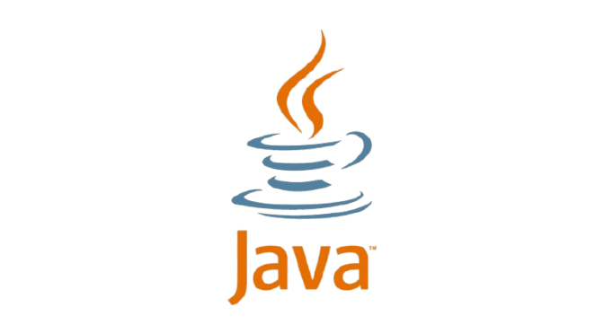
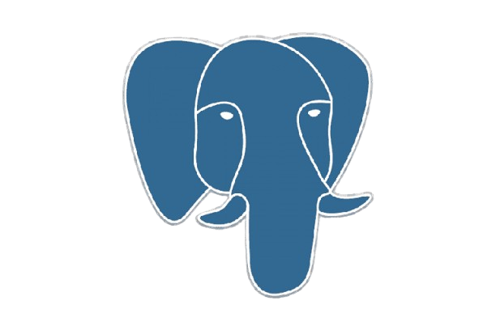
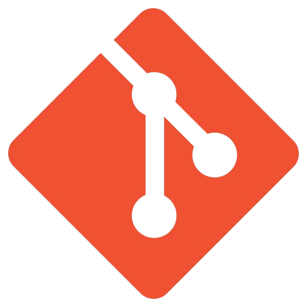
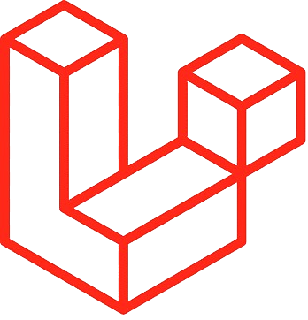
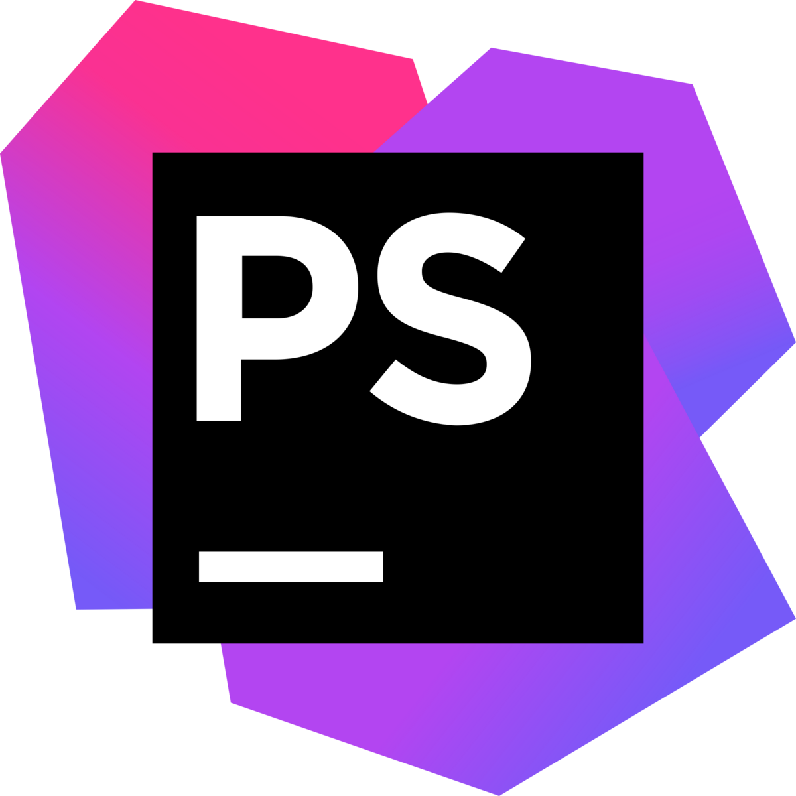
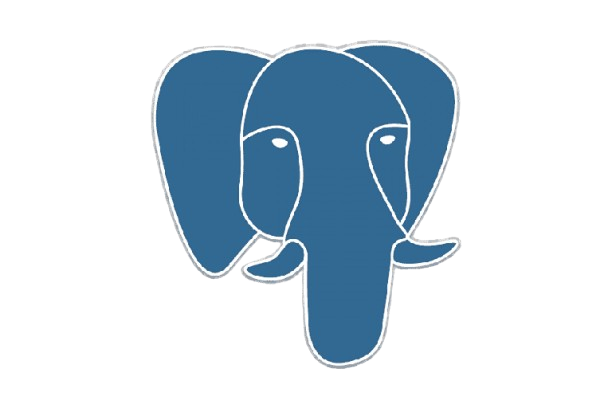
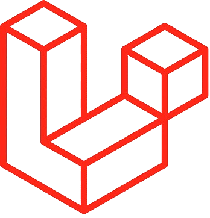
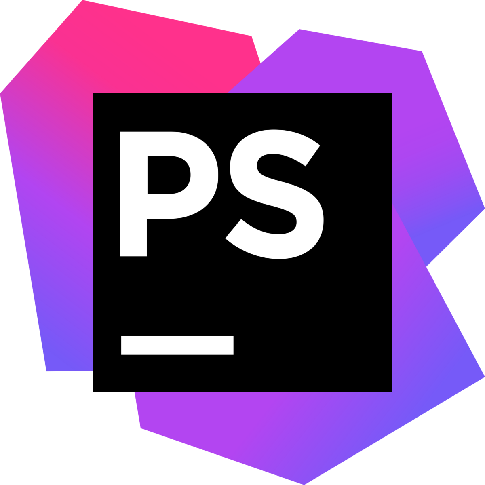

Mes compétences
Langages



Java
Python
HTML
CSS
PostgreSQL
PHP
Bash
Outils & Frameworks



Git
VSCode
Eclipse
IDEA
Laravel
PHPStorm
PyCharm
Voici mon portfolio, où je partage mes projets et mes compétences.
Je m’appelle Mathys Gaspard, je suis actuellement en deuxième année de BUT Informatique à l’IUT de Lens. J'ai découvert le domaine de l'informatique au lycée suite à un Baccalauréat général avec les spécialités Mathématiques et Numérique et sciences informatiques.
Au fil de mes études, j’ai travaillé sur plusieurs projets en Java, Python et Web. Ces expériences m’ont permis de mieux comprendre le développement logiciel, de renforcer mes compétences techniques et d’apprendre à collaborer efficacement avec d’autres étudiants, que ce soit en autonomie ou en équipe, notamment dans le cadre de SAÉ.
Je souhaite m’orienter vers les métiers du développement logiciel et web, avec un intérêt pour la conception d’applications.
Actuellement à la recherche d’un stage de 8 semaines à partir de 13 avril 2026, je suis motivé à l’idée de mettre en pratique mes compétences et de participer à des projets concrets.
En dehors de l’informatique, je suis passionné par le football, la musculation et les jeux vidéo. Le sport m’aide à rester concentré, discipliné et me surpasser, tandis que les jeux vidéo stimulent ma logique, ma créativité et ma communication. Ces activités m’apportent un équilibre entre travail, compétition et plaisir.
Java
Python
HTML
CSS
PostgreSQL
PHP
Bash
Git
VSCode
Eclipse
IDEA
Laravel
PHPStorm
PyCharm
Développement d'une version du célèbre jeu Bomberman en Java, avec une interface graphique en JavaFX et gestion du projet via Gradle.
Création d’un site web en HTML et CSS pour présenter un atelier de cuisine fictif dans le cadre d’une SAÉ.
Réalisation d’un site web sous Laravel sur le thème de la New Wave en collaboration avec des étudiants MMI, lors d’un marathon du web de 36 heures.
Création du jeu Pong en Python grâce à la librairie Pygame. Possibilité de jouer contre un bot ou contre un autre joueur. Développement réalisé en programmation orientée objet.
Développement du jeu Pacman en Java, en appliquant différents patrons de conception pour améliorer mes compétences.
Conception d’un site de films avec le framework Laravel en PHP, offrant la possibilité de consulter, rechercher, ajouter et supprimer des films.